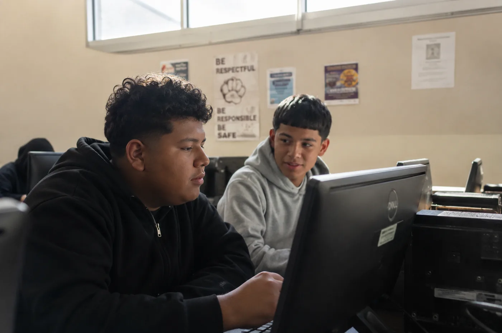
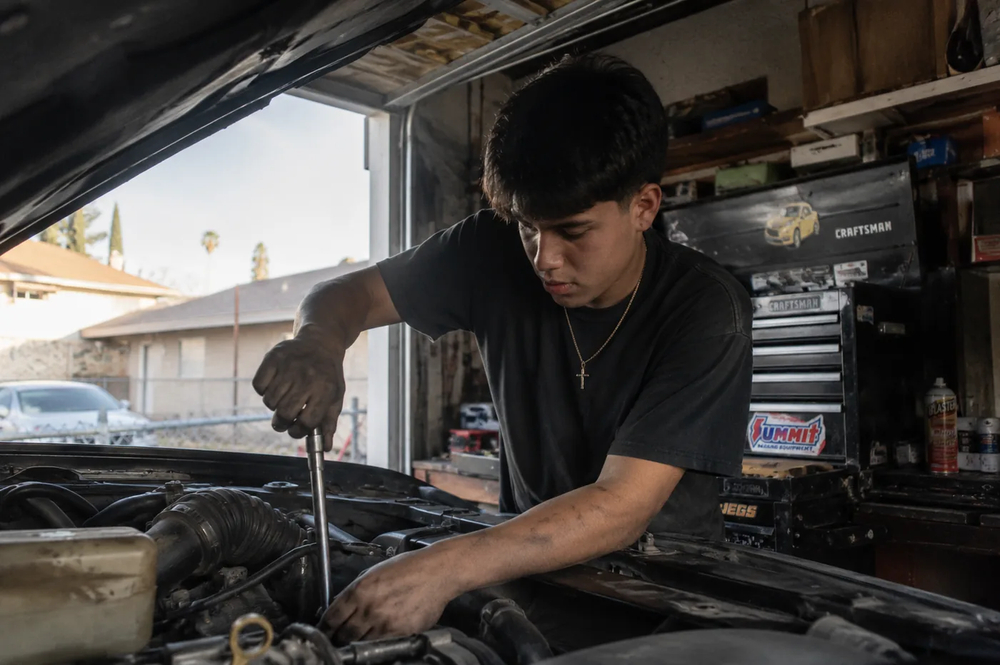
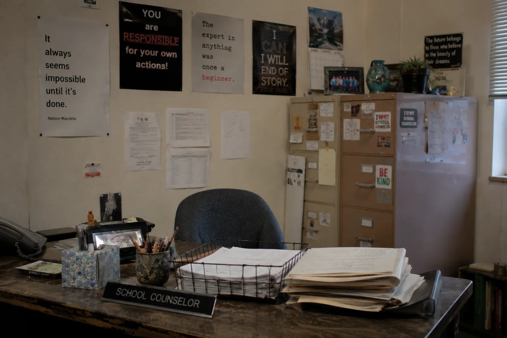
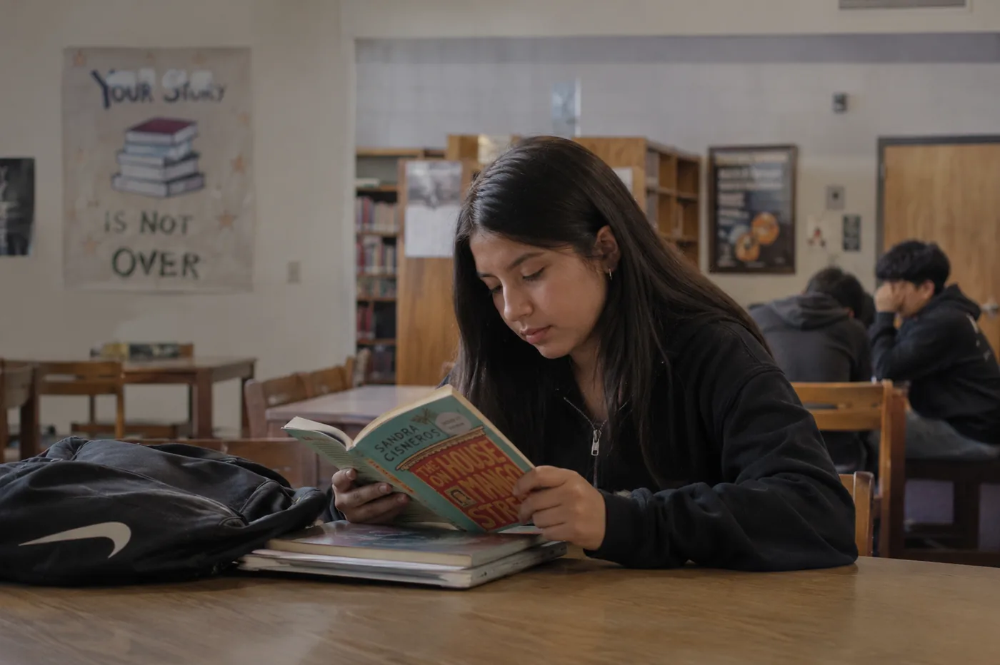

A ceiling dressed up as a compliment. Two students, one question, and what happens when something finally takes the answer seriously.
DeShawn Okafor is seventeen and knows a lot about engines. Not in a school way. In the way where you have spent the better part of three years in a family friend's garage in Delano learning things by doing them wrong first, and now when something mechanical breaks near you, people turn in your direction. He can tell you what a misfire sounds like from forty feet away. He can diagnose a bad alternator before anyone has touched a multimeter. He does not think of this as a skill so much as a fact about himself, like being left-handed. It's just what he knows.
Adults who have spent time with DeShawn tend to land on the same conclusion: he should look into auto mechanics. It is said warmly, as encouragement. What it actually is, is a ceiling dressed up as a compliment.
He has been hearing it since eighth grade.
The Forecast
There is a particular experience, not rare in the Central Valley, of having your future narrated to you before you have had much say in it. The narration is not hostile. That's the thing. It comes from people who mean well, teachers and counselors and coaches and relatives, people who look at a kid and see what's adjacent to what he already is and suggest he go there. The suggestion is based on evidence. It is also, quietly, a form of triage. Someone has decided what is realistic, and the decision has been made with the kid's circumstances in mind, and the circumstances include the zip code and the school and the GPA and what the family does for work, and all of it adds up to a kind of forecast the kid absorbs long before anyone says it plainly.
DeShawn has absorbed it. He knows what Delano looks like from the outside. He knows what the recruiter who comes to the school twice a year looks like, and what the conversation sounds like, and what happens to some of his cousins. He is not naive about any of this. He is also seventeen and has not yet decided that the forecast is the destination.

Forty Miles North
Forty miles north, in Tulare, a girl named Yesenia Fuentes is sixteen and has a different problem. Hers is not that people have told her what she is. It is that nobody has asked. She is the third of four children. Her mother works in food packaging, her father in the fields, and the question of what Yesenia wants has not come up much at home, not because her parents don't care but because the household runs on what needs doing rather than what anyone is hoping for. Her older sister started community college in Visalia two years ago and stopped after one semester when a second income became necessary. Yesenia watched this happen the way you watch weather. It was a thing that occurred. It may or may not occur to her. She has not spent much time deciding.
She is not unhappy. She likes school, loosely, meaning she does not dread it, which by the standards of the places she has described it to me is already something. She likes English class more than she lets on. She writes things in a journal that she keeps under her mattress, not for privacy exactly, more out of a vague sense that wanting things is worth keeping quiet until you know what you're doing with the want.
He can diagnose a bad alternator before anyone touches a multimeter. Adults who spend time with DeShawn tend to land on the same conclusion: he should look into auto mechanics. It is said warmly, as encouragement. What it actually is, is a ceiling dressed up as a compliment.
Sorting Machines in Disguise
Career assessments have existed in American schools for longer than most people realize. The first ones were paper inventories, introduced in the 1950s and refined through the 70s, designed to match a student's stated interests to a vocational category. They worked, in a narrow sense. A student who said she liked working with her hands got pointed toward nursing or cosmetology. A student who said he liked fixing things got pointed toward trades. The categories were not arbitrary. They were also not neutral. They reflected what the people who built them thought was possible for the students who would take them, and those students were disproportionately kids in the kind of schools where the question was less about what you might become and more about where you could plausibly land.
A counselor at a high school in Kern County, who has been in the district since 1997 and asked not to be named because she still works there, described the old paper inventories as "sorting machines in disguise." Not malicious, she said. Just pointed in a direction. "You'd look at the results and think, yes, this makes sense for this kid. And you'd be right, based on what you knew. But you'd also be seeing what you expected to see." She kept a stack of the old forms in a filing cabinet for years. She threw them away when the cabinet broke. She doesn't miss them.

What He Typed
DeShawn took the Kindred assessment on a Thursday afternoon in January, in the school's computer lab, because his English teacher had assigned it as a class exercise and he had nothing better to do with the fifty minutes. He went in expecting to be told something he already knew. He sat down at a screen. The screen asked what he cared about.
He said he thought about it for longer than expected. The question wasn't what do you want to do. It was what do you care about, which is a different question, and he knew it was different even if he couldn't say why. He typed something about systems. About wanting to understand how things were built, not just how they ran. He thought about his family's car, which he had rebuilt a significant portion of over the last two years, but he also thought about the fact that what he loved about it wasn't the car. It was the logic underneath the car, the reason each part was where it was and did what it did. He typed that. More than he meant to.
What came back surprised him. Mechanical engineering. Manufacturing systems. Something called mechatronics, which he had not heard of. There were descriptions of what engineers actually do during a day, which he had also not heard described before, because nobody had described it, because it had not come up. He read the mechatronics entry three times. He read the description of what a manufacturing systems engineer does. He looked up where you could study it.
He did not come out of the lab transformed. He came out of the lab with a browser tab open on his phone that he kept returning to for the next few weeks. That is not nothing. For a kid who had been handed the same forecast for three years, a browser tab that suggests the forecast might be wrong is a lot.
What She Typed
Yesenia took the same assessment two weeks later, in a different town, on a different computer, during a free period she had been spending reading in the library. She did not know DeShawn. She did not know anyone who had taken it. She went in with no particular expectations because she had no particular context.
The question about what she cared about sat with her for a minute. She thought about the journal under her mattress. She did not type about the journal. She typed about fairness, about a specific thing that had happened in sixth grade when a girl she knew was suspended for something Yesenia had watched five other kids do without consequence, and how she had thought about that incident more times than made sense, how it had stayed with her as a kind of question she could not answer. She typed more than she planned to. She said she felt slightly embarrassed by how much she typed. She submitted it anyway.
What came back: civil rights law. Advocacy. A field called restorative justice, which she also had not heard of. Community organizing. The descriptions were specific in a way that surprised her, not general encouragements but actual accounts of what people in those fields did on Tuesdays, what problems they worked on, what it felt like to be inside the work.
"I didn't know those were jobs," she said, and then paused the way you pause when something you have just said sounds stranger out loud than it did in your head. "I mean, I knew lawyers existed. I just didn't know there was all this in between."
"I didn't know those were jobs. I mean, I knew lawyers existed. I just didn't know there was all this in between."

The Room Nobody Mentioned
I keep thinking about what it means that both of these kids were surprised. Not pleasantly surprised, exactly, though that is part of it. Surprised in a more unsettling way, the way you are surprised when you realize a room existed in a house you thought you knew completely. The surprise contains an implicit question about what, exactly, had been going on before. Why is the room new. Who decided it was off-limits. Who forgot to mention it.
Delano's college-going rate hovers around thirty-five percent. Tulare County's child poverty rate is among the highest in the state. The military recruiter who visits schools in Kern County was described to me by three different people in three different conversations without my asking, which tells you something about his presence in the landscape. None of this is news to the kids who grow up inside it. They know the statistics the way they know the weather. You do not need to be told that June will be hot. You just need to not be told that June is all there is.
What the assessment did, in both cases, was arrive without a prior opinion. It did not know about the zip code. It did not have a file. It asked what they cared about and waited, and when they told it the truth, it took the truth seriously and sent something back. The counselor at the Kern County school put it plainly: "Most of the tools we've had route kids somewhere. This one tried to find out where they actually wanted to go." She said she doesn't love the word revolutionary, that she has heard it too many times about too many things. "But it asks a different question. I'll give it that."
A Harder Question
DeShawn is still in Delano, still in eleventh grade, still fixing things in the garage on weekends. He has not applied anywhere. He has looked at two community colleges and one Cal State campus, looked being the correct word: navigated to the pages, read the program descriptions, closed the browser without filling anything out. He is not ready. He may not be for a while. There is the question of money, and the question of whether his family can absorb his absence, and the question of what it actually takes to go somewhere from here, which is a set of questions the platform did not answer. The platform is not in that business.
What it did was change the terms of the question he is carrying. He is not asking whether he should be a mechanic anymore. He is asking how someone like him becomes an engineer, which is a harder question with a more uncertain answer and a better destination. The uncertainty is its own kind of progress.
Yesenia pulled out the journal from under the mattress after she got her results. She read a few pages. She put it back. She has not told her parents what the platform suggested, not because she is hiding it but because she is not ready to say it out loud in a way that makes it real enough to disappoint. She knows how that works. She has watched her sister. She is keeping the want quiet a little longer, until she knows what she's doing with it.
But she is doing something with it. She found a summer program at a community college in Visalia. Application due in April. She has not filled it out. She has read it four times.
Home: NYT Magazine, The Atlantic. Social capture piece. Teacher professional development materials.
Audience: Teachers, district partners, donors interested in equity, parents of first-gen students, education journalists.
Goal: Makes the mission feel culturally specific rather than generically inclusive. The piece teachers screenshot and send to each other.